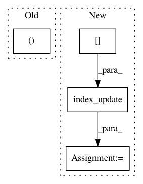

26359ff3da29f088976a5bb4d6c67abe84b8b983,thinc/backends/jax_ops.py,,backprop_lstm_stepper,#,720
Before Change
def backprop_lstm_stepper(t, state):
(dW, db, dX), (dY, dCt3), (G, C, S), (W, b) = state
// TODO: I think I"m ignoring the sequence grads here?
(dAt2, dYt2, dCt2) = backprop_lstm_gates(dCt3, dY[t+1], G[t], C[t+1], C[t])
dX3, dY_prev, dW3, db3 = backprop_lstm_weights(dAt, (S[t], W, b))
dX = index_update(dX, index[t], dX3)
return (dW+dW3, db+db3, dX), (dY, dC), (G, C, X), (W, b)
After Change
dAt3, dCt2 = backprop_lstm_gates(dCt3, dYt3, Gt3, Ct3, Ct2)
dXt3, dYt2, dW3, db3 = backprop_lstm_weights(dAt3, (St3, W, b))
dX = index_update(dX, index[t], dX3)
dY = index_update(dY, index[t], dYt2)
return (dW+dW3, db+db3, dX), (dY, dCt2), (G, C, X), (W, b)
@jax_jit()
In pattern: SUPERPATTERN
Frequency: 3
Non-data size: 4
Instances
Project Name: explosion/thinc
Commit Name: 26359ff3da29f088976a5bb4d6c67abe84b8b983
Time: 2020-01-19
Author: honnibal+gh@gmail.com
File Name: thinc/backends/jax_ops.py
Class Name:
Method Name: backprop_lstm_stepper
Project Name: explosion/thinc
Commit Name: 1c02a7df353ab5e66b73565d204d51b03bd0d65b
Time: 2020-01-19
Author: honnibal+gh@gmail.com
File Name: thinc/backends/jax_ops.py
Class Name:
Method Name: recurrent_lstm
Project Name: explosion/thinc
Commit Name: 1c02a7df353ab5e66b73565d204d51b03bd0d65b
Time: 2020-01-19
Author: honnibal+gh@gmail.com
File Name: thinc/backends/jax_ops.py
Class Name:
Method Name: _lstm_stepper